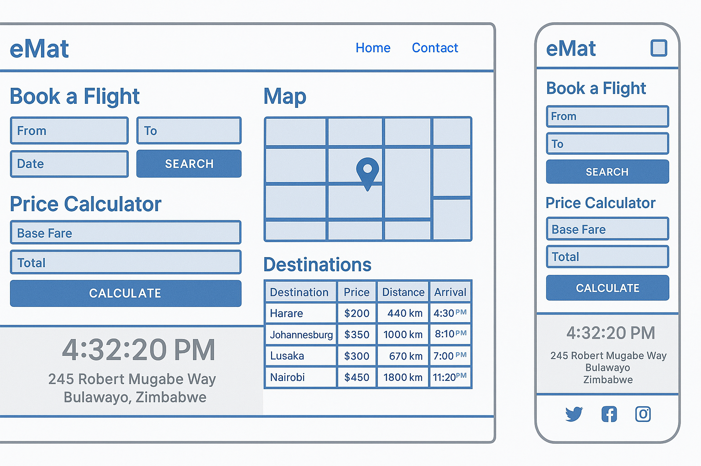
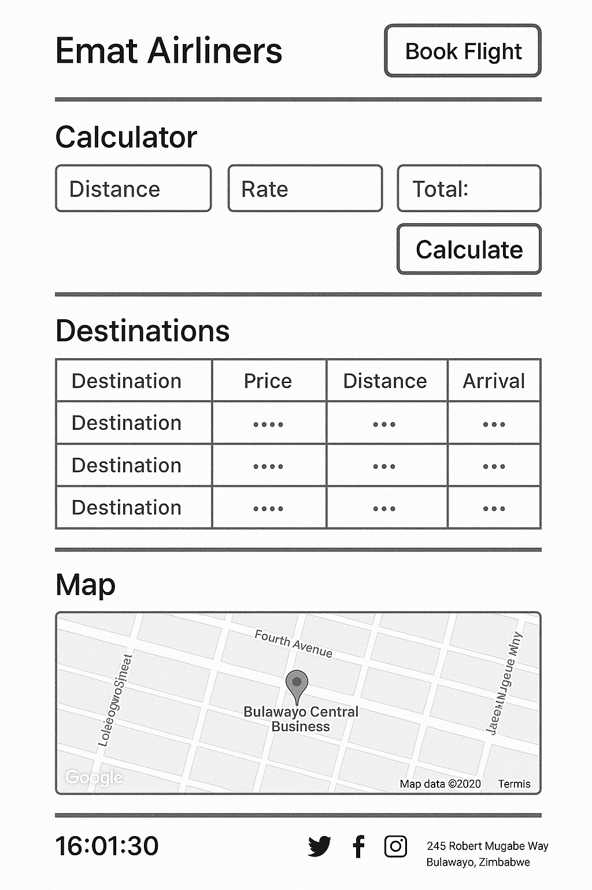

Name: eMat Airliners
The name was chosen because it reflects the company's identity and its core service: providing efficient and accessible air travel options locally and internationally.
The purpose of the eMat Airliners website is to allow users to explore flight options, book tickets, check pricing, view destinations, and locate the company’s headquarters. The site aims to provide real-time updates and a convenient interface for travelers.
This document demonstrates the use of the selected color schema in headings, borders, and background sections.
Below are wireframes representing the layout for both mobile and desktop homepage views of the eMat Airliners website.

